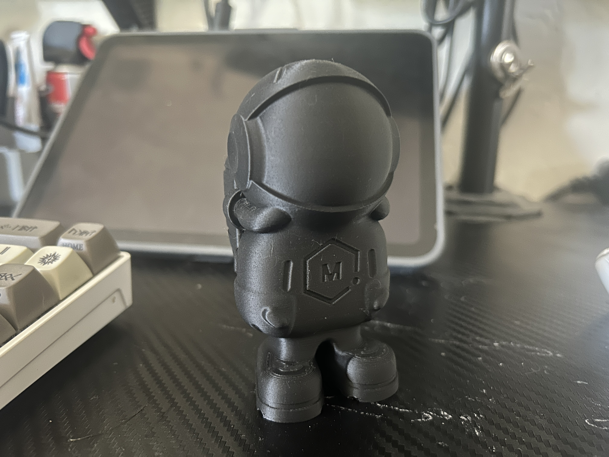

Week 12's Goals:
- Group Assignment
- review the safety data sheets for each of your molding and casting materials, then make and compare test casts with each of them
- compare printing vs machining molds
- Individual Assignment
- design a mold around the process you'll be using, produce it with a smooth surface finish, and use it to cast parts
- use more then two mold parts
The Silicone and the Resin
I was very excited about this week's project because I have been wanting to cast my own items for a long, long time. I watch casting videos online about dice, jewelery, so many different things. And we even have a senior design project that should be casting in metal this year. So learning this at this point will be incredibly useful for the project. Doing a little bit of research we decided on two items to make the molds and cast:
These two videos inspired a lot of my first build but caused a few issues down the line:
This first one is a little strange but good at showing what to do.
This second one is excellent
Because of the videos I chose to use the following Silicone and Resin:
- Smooth-Cast 300 - Bright White, Ultra Low Viscosity Liquid Plastic - Pint Unit
- Amazon Link
- MSDS
- MSDS Highlights:
- Wear Face, Skin, and Breathing protection
- Thoroughly wash skin after use
- Use only in well ventilated area
- Keep work clothes separate after use
- Mold Star 30-1A:1B Mix by Volume Platinum Silicone Rubber - Pint Unit
- Amazon Link
- MSDS
- MSDS Highlights:
- Wear Face, Skin, and Breathing protection
- Do not eat or drink around work area
- Thoroughly wash skin after use
- Use only in well ventilated area
- Keep work clothes separate after use
- Adhesive Guru Silicone Mold Release Aerosol Spray (13.5 fl oz) Lubricant Agent for Epoxy Resin Molds (1 Pack)
- Amazon Link
- MSDS
- MSDS Highlights:
- Wear Face, Skin, and Breathing protection
- HIGHLY FLAMMABLE
Mold Making Group Project: Printing vs Milling:
This week we also worked on milling and printing different molds to make a silicone mold and eventually make a resin final "coaster"
We designed the negative to the mold on Fusion 360 and printed the file on the Moonlighter's X1 Carbon in PLA as well as milling it on the ShopSabre out of a hard plastic
Once we printed and molded them we immediately saw differences in the outcome where the printed one had finer detailed but a worse surface finish while the mill had an excellent finish but because of the toolhead we used was much coarser in its design.

Regardless of that, both images came out with excellent outcomes the final mold and definitely were an excellent way of producing the molds. I personally prefer 3d printing though the edges are not as smooth just for the complexity that can be printed. However the speed and finish of milling is superior on both counts. It might just be because I am not as comfortable at milling that I feel this way.
The first attempt and mistakes:
So the first thing I tried was to imitate the technique in both of the above videos. Making a half mold out of a model and clay and then creating the second half of the mold with the first. To do this I chose a cool little model called - Phil-a-ment from Matterhackers. You can find Phil if you click on the image below:
So I followed the videos step by step. First stick your model in clay and make sure the sides are well adhered to the edges of your model.

Once you do this create a little barrier around your model with some object. I wanted to use LEGO like my first video but I had some foamcore on hand so I used that:


Seal up the edges well with hot glue and make sure you have no gap between the clay and the actual foam core. Then get the silicone mold and pour the solution in a 1A:1B ratio. Stir like the dickens and then once you think you're done stir some more.
Then once it is thoroughly mixed, pour that into your mold and terribly notice that you did not measure out the right amount and see a lump in the back of your mold.


Look at your pour sadly while you wait six hours for it to cure and promptly go on Amazon to purchase more silicone.
Here I learned two things: make sure you have extra material, which I keep learning again and again. And measure out how much you need to pour in some way. There is a handy dandy mold calculator online btw. Good resource.
Second Attempt While I Wait: Hot Glue Chronicles
While I sadly looked at my mold cure I thought of something. Isn't hot glue made out of silicone? So that perked me up and I attempted a new mold. This time, with something MUCH smaller.
First steps I followed used the same process as above, clay, blank, box. Then, with a well heated hot glue gun, I just started pouring. Trying to stay close to the model to minimize bubbles. I started patting down the hot glue while wearing a glove to minimize bubbles.

Here I had success! Now that there is some sort of mold I moved onto the silicone. I measured out by weight this time instead of eyeballing the 1A:1B mixture.

You pour this into a mold and then wait for it to cure. This resin takes 10 minutes to cure and goes in clear but cures white. Which is VERY Cool to watch.
Once this is done, I got a

There was a lot of flashing due to an overpour and it not being balanced on my part but hey it was a working mold!
The Third Attempt: Cast a wide net and something will work
The next morning I came in with new silicone and a lot of new opportunities. Using the information I learned yesterday I made two much smaller molds out of some new 3d prints I had going over night this time I used a resin printer and actually this came to back fire a little.


When I poured these two molds I had a lot of extra silicone (I was worried the same thing that happened last time would happen now) and I managed to use a final cup mold of a figure I had lying about

So then the process of waiting began again, and this time I didnt know what to do, so I designed a mold out of a 3d printer of a quick chess piece I made. If you would like to test the files they are hosted here on Onshape

Mind you, this is after I broke it already. But I decided to pour the mold anyway

While that mold set I pulled out one of the two molds I made earlier, because I was a little impatient. It seems that for some reason the mold did not set correctly wherever it touched the resin print. After I did some research, I found out that it may be because the resin needs to degas for about two weeks if not it stops the curing reaction for the silicone.


You can see the edges in the resin cast are rounded and there are still deposits from the silicone within.
By the time this cured I was able to pull out my chess piece cast. It came out beautiful but there was one major problem, it was FUSED to the mold.


This heartened me because it showed that indeed a mold can work and though there was a bug in it here I kept going. I waited for the cup mold to finish and then released the blank, sprayed some release, and let the mold set. After its 10 minute time I carefully pulled it out and it seemed I had a (95%) success!


With this success under my belt, I decided to try the two part mold a different way and use the 3d printer for this process.
The Fourth Attempt: Now we can really think it through, 3d Printed negative
Using the old mold that I made, I created a negative on the 3d printer of the same part that I wanted to make. Quick use of the boolean tool made this easy to do.
Once they printed they looked something like this:

Right now I am waiting for the silicone to cure and will be pouring it tomorrow

The Outcome
I came into the lab this morning fingers crossed that everything cured as planned. So I walked up to the desk and poked the mold to be sure that everything was solid. The scientific poke test confirmed that! Once I pulled the mold out of the blank, that was amazing.

Now I mixed the Smooth-Cast into the mold and waited for it to cure. I don't think it went in tight enough so there would be some flashing.

After waiting for it to cure I pulled out the mold and it came out excellent! However there were two issues that arose. One: on both sides of the mold there was a small bubble. I do not know if that was design or I needed to degas it a bit more? Two, the cross is kind of soft. It may be due to the fact that it needs to cure a bit longer. I will probably try another pour sometime soon but I take this as a success.